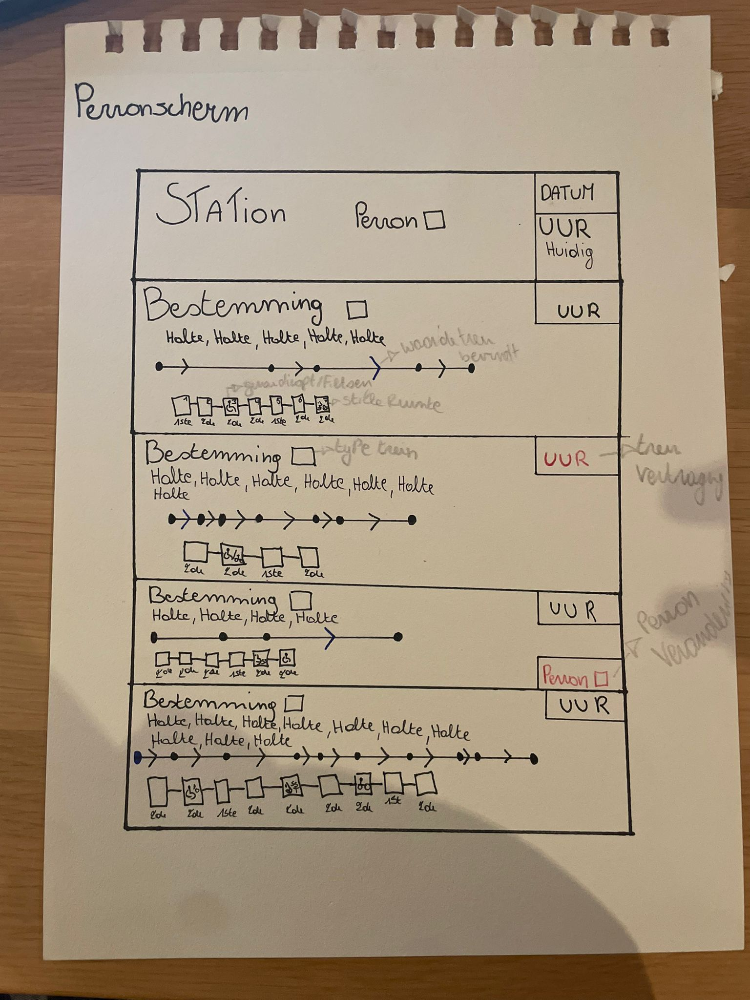
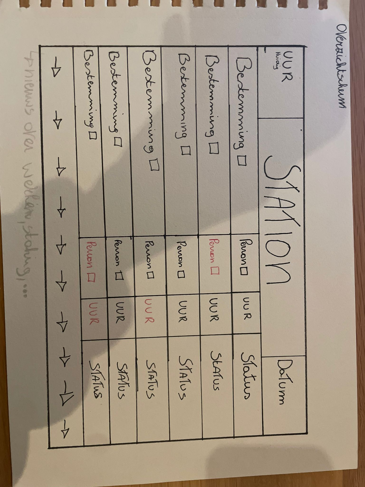

Ik heb de datum vanboven bij het huidige uur toegevoegd, omdat ik zelf ook heb gemerkt dat ik wel snel daarnaar kijk om te weten welke dag het is.
Heb bij de lijn het stuk waar de trein zit in het blauw gezet dan kan je zo zien ah het blauwe pijltje of bolletje daar is de trein nu.
Bij de wagons heb ik 1ste en 2de klas toegevoegd dan heb je al een beter beeld waar je moet zijn. Heb de symbolen voor rolstoel, fietsers en stille wagons eraan toegevoegd ook voor meer duidelijkheid te krijgen.
Het uur dat de trein aankomt wordt rood als er vertraging op zit dit wordt vanzelf al in gerekend dat je dit niet zelf moet doen.
Daaronder heb ik ook toegevoegd dat als er onverwachts een perron verandering is dat het in het rood onder het uur tevoorschijn komt.

Heb hier ook in gezet dat het uur rood wordt bij vertraging en dit zelf al in berekent.
Het perron wordt ook rood weergegeven in geval van verandering.
Hier heb ik net zoals de ander het uur in het rood bij vertraging en perron verandering ook in het rood.
Bij de wagons staat 1ste en 2de klas bij, ook staan de symbolen van rolstoelgebruikers, fietsers, stilte zonde, … erbij zodat je gemakkelijk weet war je naartoe moet als je al in de trein zit.
De wagon waar je inzit is fluo geel gekleurd zo valt het snel op in welke wagon je jezelf bevindt.
Safety nummer in het groen zodat het opvalt dat er een safety nummer is en dat je het sneller kunt vinden in geval dat je het nodig hebt.
De pijlen om te weten via welke kant de deuren opengaan wordt verlicht zodra dat de trein gaat aankomen. (Heb ik in het geel gezet).